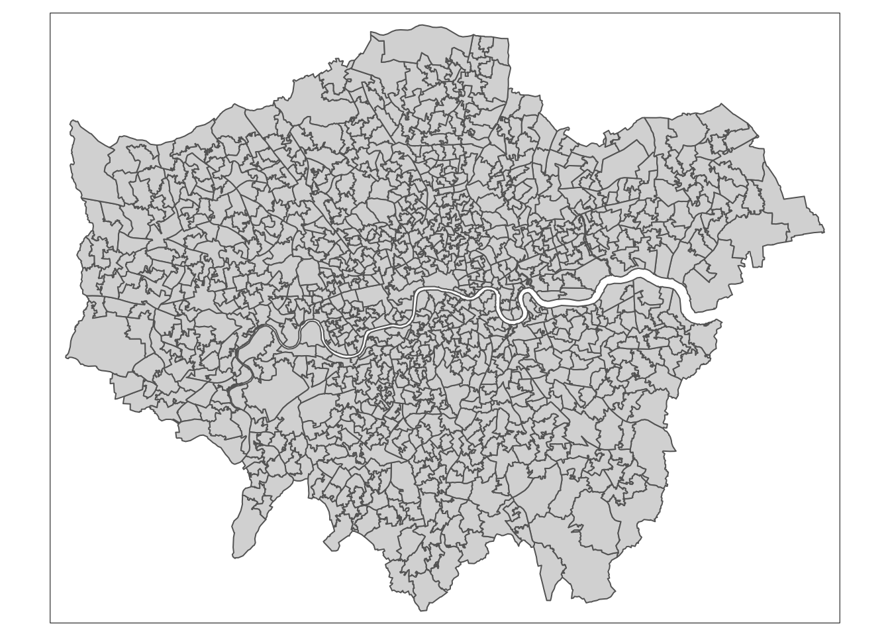

── Attaching packages ─────────────────────────────────────── tidyverse 1.3.2 ──
✔ ggplot2 3.4.0 ✔ purrr 0.3.5
✔ tibble 3.1.8 ✔ dplyr 1.0.10
✔ tidyr 1.2.1 ✔ stringr 1.5.0
✔ readr 2.1.3 ✔ forcats 0.5.2
── Conflicts ────────────────────────────────────────── tidyverse_conflicts() ──
✖ dplyr::filter() masks stats::filter()
✖ dplyr::lag() masks stats::lag()
Linking to GEOS 3.11.0, GDAL 3.5.3, PROJ 9.1.0; sf_use_s2() is TRUE5 Programming for Spatial Analysis
This week we are going to look at how to use R and RStudio as a piece of GIS software. Like last week, we will be completing an analysis on our London theft crime dataset. However, rather than looking at overall theft in London by month, we will add a spatial component to our analysis.
5.1 Lecture slides
The slides for this week’s lecture can be downloaded here: [Link]
5.2 Reading list
Essential readings
- Longley, P. et al. 2015. Geographic Information Science & systems, Chapter 13: Spatial Analysis, pp. 290-318. [Link]
- Lovelace, R., Nowosad, J. and Muenchow, J. 2021. Geocomputation with R, Chapter 2: Geographic Data in R. [Link]
- Lovelace, R., Nowosad, J. and Muenchow, J. 2021. Geocomputation with R, Chapter 3: Attribute data operations. [Link]
- Lovelace, R., Nowosad, J. and Muenchow, J. 2021. Geocomputation with R, Chapter 8: Making maps with R. [Link]
Suggested readings
- Poorthuis, A. and Zook, M. 2020. Being smarter about space: Drawing lessons from spatial science. Annals of the American Association of Geographers 110(2): 349-359. [Link]
- De Smith, M, Goodchild, M. and Longley, P. 2018. Geospatial analsyis. A Comprehensive guide to principles techniques and software tools. Chapter 9: Big Data and geospatial analysis. [Link]
- Radil, S. 2016. Spatial analysis of crime. Chapter 24: The Handbook of Measurement Issues in Criminology and Criminal Justice, pp. 536-554. [Link]
5.3 Crime in London III
To analyse crime over space, we will go through several steps of data preparation and data linkage to ultimately aggregate our data to the Middle layer Super Output Area (MSOA) level. After this, we will map the crime rate for 2021 using the tmap library.
OAs, LSOAs and MSOAs make up the different levels of the census statistical geographies. Middle layer Super Output Areas (MSOAs) are made up of groups of LSOAs, usually four or five. They comprise between 2,000 and 6,000 households and have a usually resident population between 5,000 and 15,000 persons. For details see the explanation on the webapge of the Office for National Statistics
5.3.1 Spatial analysis set up
Open a new script within your GEOG0030 project and save this script as wk5-crime-spatial-processing.r. At the top of your script, add the following metadata:
R code
# Analysing theft in London by MSOA
# Date: January 2024
# Author: Justin Now let us add all of the libraries we will be using today to the top of our script:
R code
# load libraries
library(tidyverse)
library(sf)
library(tmap)You have already been introduced to the tidyverse library last week, but now we are adding sf to read and load our spatial data as well as tmap to visualise our spatial data. We are going to first load the crime-theft-2021-london.csv we saved last week.
R code
# read in our csv file
all_theft_df <- read_csv("data/raw/crime/crime-theft-2021-london.csv")Rows: 38229 Columns: 12
── Column specification ────────────────────────────────────────────────────────
Delimiter: ","
chr (9): crime_id, month, reported_by, falls_within, location, lsoa_code, ls...
dbl (2): longitude, latitude
lgl (1): context
ℹ Use `spec()` to retrieve the full column specification for this data.
ℹ Specify the column types or set `show_col_types = FALSE` to quiet this message.You can inspect the dataframe by using the View() function. If you do this carefully, you would notice that some of the crimes do not have a location associated with them. The first thing we therefore need to do is filtering these rows out:
R code
# filter out crimes that have no location information
all_theft_df <- filter(all_theft_df, location != "No Location")Next, we need a dataset containing the MSOAs for London. Normally, you would navigate to the Open Geography Portal, download a copy of all MSOA polygons, filter out the MSOAs that you need, and add in the 2021 population data. To save us some time today, however, you can download a pre-filtered MSOA file below. Unzip the file and copy the GeoPackage to your data/raw/boundaries folder.
| File | Type | Link |
|---|---|---|
| MSOAs London 2021 | GeoPackage |
Download |
Now let’s load the MSOA2021_London.gpkg. We will store this as a variable called msoa_population and use the sf library to load the data:
R code
# read in our MSOA GeoPackage
msoa_population <- st_read("data/raw/boundaries/MSOA2021_London.gpkg")Reading layer `MSOA2021_London' from data source
`/Users/justinvandijk/Library/CloudStorage/Dropbox/UCL/Web/jtvandijk.github.io/GEOG0030/data/raw/boundaries/MSOA2021_London.gpkg'
using driver `GPKG'
Simple feature collection with 1002 features and 4 fields
Geometry type: MULTIPOLYGON
Dimension: XY
Bounding box: xmin: 503574.2 ymin: 155850.8 xmax: 561956.7 ymax: 200933.6
Projected CRS: OSGB36 / British National GridYou should also see the msoa_population variable appear in your environment window.
5.3.2 Interacting with spatial data
As this is the first time we have loaded spatial data into R, let’s go for a little exploration of how we can interact with our spatial dataframe. The first thing we want to do when we load spatial data is, of course, map it to confirm if everything is in order. To do this, we can use a really simple command from R’s base library: plot(). As we do not necessarily want to plot this data everytime we run this script in the future, we can type this command into the console:
R code
# plot our MSOA data
plot(msoa_population)
You should see your msoa_population plot appear in your Plots window. As you will see, your MSOA dataset is plotted ‘thematically’ by each of the fields within the dataset, including the pop2021 field.
This plot() function is not to be used to make maps but can be used as a quick way of inspecting your spatial data.
We need to find out more information about our msoa_population data. Let’s next check out our class of our data. Again, in the console type:
R code
# inspect
class(msoa_population)[1] "sf" "data.frame"We should see our data is an sf dataframe, which is great because it means we can utilise our tidyverse libraries with our msoa_population. We can also use the attributes() function we looked at last week to find out a little more about the spatial part of our dataframe:
R code
# inspect
attributes(msoa_population)$names
[1] "msoa21cd" "msoa21nm" "name" "pop2021" "geom"
$row.names
[1] 1 2 3 4 5 6 7 8 9 10 11 12 13 14 15 16 17 18
[19] 19 20 21 22 23 24 25 26 27 28 29 30 31 32 33 34 35 36
[37] 37 38 39 40 41 42 43 44 45 46 47 48 49 50 51 52 53 54
[55] 55 56 57 58 59 60 61 62 63 64 65 66 67 68 69 70 71 72
[73] 73 74 75 76 77 78 79 80 81 82 83 84 85 86 87 88 89 90
[91] 91 92 93 94 95 96 97 98 99 100
[ reached getOption("max.print") -- omitted 902 entries ]
$class
[1] "sf" "data.frame"
$sf_column
[1] "geom"
$agr
msoa21cd msoa21nm name pop2021
<NA> <NA> <NA> <NA>
Levels: constant aggregate identityWe can see how many rows we have, the names of our rows and a few more pieces of information about our msoa_population data, for example, we can see that the specific $sf_column i.e. our spatial information) in our dataset is called geom.
We can investigate this column a little more by selecting this column within our console to return. In the console type:
R code
# inspect geometry column
msoa_population$geomGeometry set for 1002 features
Geometry type: MULTIPOLYGON
Dimension: XY
Bounding box: xmin: 503574.2 ymin: 155850.8 xmax: 561956.7 ymax: 200933.6
Projected CRS: OSGB36 / British National Grid
First 5 geometries:MULTIPOLYGON (((534858 165834.9, 534889.1 16550...MULTIPOLYGON (((544600.9 182911.6, 544750.3 182...MULTIPOLYGON (((531567.9 176323.4, 531511.3 176...MULTIPOLYGON (((523236 179252.4, 523253.4 17914...MULTIPOLYGON (((532509.5 184173.5, 532568.3 184...You should see new information about our geom column display in your console. From this selection we can find out the dataset’s:
- geometry type
- dimension
bbox(bounding box)- CRS (coordinate reference system)
- partia; definition of the first five geometries of the dataset
This is really useful as one of the first things we want to know about our spatial data is what coordinate system it is projected with. Just like our lsoa_population dataset that we used in previous weeks, the msoa_population data was created and exported within the British National Grid.
We can also find out this information, but with more details, with the st_crs() function from the sf library.
R code
# inspect CRS
st_crs(msoa_population)Coordinate Reference System:
User input: OSGB36 / British National Grid
wkt:
PROJCRS["OSGB36 / British National Grid",
BASEGEOGCRS["OSGB36",
DATUM["Ordnance Survey of Great Britain 1936",
ELLIPSOID["Airy 1830",6377563.396,299.3249646,
LENGTHUNIT["metre",1]]],
PRIMEM["Greenwich",0,
ANGLEUNIT["degree",0.0174532925199433]],
ID["EPSG",4277]],
CONVERSION["British National Grid",
METHOD["Transverse Mercator",
ID["EPSG",9807]],
PARAMETER["Latitude of natural origin",49,
ANGLEUNIT["degree",0.0174532925199433],
ID["EPSG",8801]],
PARAMETER["Longitude of natural origin",-2,
ANGLEUNIT["degree",0.0174532925199433],
ID["EPSG",8802]],
PARAMETER["Scale factor at natural origin",0.9996012717,
SCALEUNIT["unity",1],
ID["EPSG",8805]],
PARAMETER["False easting",400000,
LENGTHUNIT["metre",1],
ID["EPSG",8806]],
PARAMETER["False northing",-100000,
LENGTHUNIT["metre",1],
ID["EPSG",8807]]],
CS[Cartesian,2],
AXIS["(E)",east,
ORDER[1],
LENGTHUNIT["metre",1]],
AXIS["(N)",north,
ORDER[2],
LENGTHUNIT["metre",1]],
USAGE[
SCOPE["Engineering survey, topographic mapping."],
AREA["United Kingdom (UK) - offshore to boundary of UKCS within 49°45'N to 61°N and 9°W to 2°E; onshore Great Britain (England, Wales and Scotland). Isle of Man onshore."],
BBOX[49.75,-9,61.01,2.01]],
ID["EPSG",27700]]You notice that we actually get a lot more information about our CRS beyond simply the code using this function. This function is really important to us as users of spatial data as it allows us to retrieve and set the CRS of our spatial data when the projection is not specified in the data but we do know what projection system should be used.
The final thing we might want to do before we get started with our data analysis is to simply look at the data table part of our dataset, i.e. what we called the Attribute Table in QGIS, but here it is simply the table part of our dataframe. To do so, you can either use the View() function in the console or click on the msoa_population variable within our environment.
5.3.3 Getting our crime data into shape
Now we have our data loaded, our next step is to process our data to create what we need as our final output for analysis: a spatial dataframe that contains a theft crime rate for each MSOA. We only two types of spatial or spatially-relevant data in our all_theft_df that can help us with this:
- The approximate WGS84 latitude and longitude.
- The Lower Super Output Area (LSOA) in which the crime it occurred.
From Week 3’s practical, we know we can map our points using the coordinates and then provide a count by using a point-in-polygon operation, but because the crime data already have an LSOA code we will be using an Attribute Join today to show you the use of lookup tables.
In situations like this when you actually have the point location data, the best solution is probably to conduct a point-in-polygon analysis yourself rather than relying on a lookup table. However, because we do not always have access to point location data and you are likely to encounter situations where you need a lookup table, there won’t be any point-in-polygon action today.
Attribute join
To get the number of crimes that occurred in each 2021 MSOA linked to our population data, we need to link them together. However, we have two issues. First, our data is available at the LSOA level. Second, and to complicate things further, the all_theft_df dataset is based on 2011 LSOA geographies. This means that we need to take two steps:
- Update our 2011 LSOA codes to their 2021 counterparts.
- Aggregate the resulting 2021 LSOA counts to their parent MSOA.
From a GIScience perspective, there are many ways to do this but today we will be using look-up tables. Look-up tables are an extremely common tool in database management and programming, providing a robust approach to storing additional information about a feature (such as a row within a dataframe) in a separate table that can quite literally be ‘looked up’ when needed for a specific application.
The data.police.uk website suggests that only from June 2023, the 2021 LSOA codes are used by default.
To be able to do this, we first need to find a look-up table that contains a list of 2011 LSOAs and their corresponding 2021 LSOAs. Lucky for us the Office for National Statistics provides this for us on their Open Geography Portal. They have a table that contains exactly what we’re looking for: LSOA (2011) to LSOA (2021) to Local Authority District (2022) Lookup for England and Wales (Version 2). As the description on the website tells us:
“This is an exact fit lookup file between Lower layer Super Output Areas as at December 2011 and Lower layer Super Output Areas as at December 2021 and Local Authority Districts as at December 2022 in England and Wales. This product has been provided with a ‘change indicator’ field, that define the lookup between 2011 and 2021 LSOA. This field indicates which super output areas have changed between 2011 and 2021.”
Download the ONS lookup table. Subsequently, unzip and move this file to your data -> raw -> boundaries folder.
| File | Type | Link |
|---|---|---|
| ONS LSOA 2011 - LSOA 2021 lookup | csv |
Download |
Load the dataset using the read_csv() function.
R code
# read the lookup table
lsoa_lookup <- read_csv("data/raw/boundaries/lsoa11_lsoa21.csv")Rows: 35796 Columns: 9
── Column specification ────────────────────────────────────────────────────────
Delimiter: ","
chr (8): LSOA11CD, LSOA11NM, LSOA21CD, LSOA21NM, CHGIND, LAD22CD, LAD22NM, L...
dbl (1): ObjectId
ℹ Use `spec()` to retrieve the full column specification for this data.
ℹ Specify the column types or set `show_col_types = FALSE` to quiet this message.Now we have our lookup table, we can assign a relevant 2021 LSOA code to each of the 2011 LSOA codes in our all_theft_df dataframe. To do so, we are going to use one of the join() functions from the dplyr library.
We have already learnt how to complete Attribute Joins in QGIS via the Joins tab in the Properties window so it should come of no surprise that we can do exactly the same process within R. To conduct a join between two dataframes, we use the same principles of selecting a unique but matching field within our dataframes to join them together.
Within R, you have two main options to complete a dataframe join:
- The first is to use the
baseR library and itsmerge()function:- By default the dataframes are merged on the columns with names they both have, but you can also provide the columns to match separate by using the parameters:
by.xandby.y. - Your code would look something like:
merge(x, y, by.x = "xColName", by.y = "yColName"), withxandyeach representing a dataframe. - The rows in the two dataframes that match on the specified columns are extracted, and joined together.
- If there is more than one match, all possible matches contribute one row each, but you can also tell merge whether you want all rows, including ones without a match, or just rows that match, with the arguments
all.xandall.
- By default the dataframes are merged on the columns with names they both have, but you can also provide the columns to match separate by using the parameters:
- The second option is to use the
dplyrlibrary:dplyruses SQL database syntax for its join functions.- There are four types of joins possible with the
dplyrlibrary.inner_join(): includes all rows that exist both withinxandy.left_join(): includes all rows inx.right_join(): includes all rows iny.full_join(): includes all rows inxandy.
- Figuring out which one you need will be on a case by case basis.
- Again, if the join columns have the same name, all you need is
left_join(x, y). - If they do not have the same name, you need a
byargument, such asleft_join(x, y, by = c("xName" = "yName")). Left of the equals is the column for the first dataframe, right of the equals is the name of the column for the second dataframe.
As we have seen from the list of fields above, we know that we have at least two fields that should match across the datasets: our LSOA codes and LSOA names. We of course need to identify the precise fields that contain these values in each of our dataframes, i.e. LSOA11CD and LSOA11NM in our lsoa_lookup dataframe and lsoa_code and lsoa_name in our all_theft_df dataframe, but once we know what fields we can use, we can go ahead and join our two dataframes together.
If you have a one-to-one lookup table, e.g. one LSOA11 geography corresponds to exactly one LSOA21 entry, this process is very easy. However, between the 2011 and 2021 Census different changes have happened: some LSOA11 have been split into multiple LSOA21 polygons and in other cases LSOA11 have been merged together into a single LSOA21 polygon. This means we need to do some extra work to make sure we not accidentally adjust the number of crimes that are captured in the data.
Unfortunately, the LSOA lookup that we have does not link 2011 LSOAs to 2021 LSOAs on a one-to-one basis. In fact, different types of relationships exists that are flagged in the CHGIND column:
| Type | Description |
|---|---|
U |
No Change from 2011 to 2021. This means that direct comparisons can be made between these 2011 and 2021 LSOA. |
S |
Split. This means that the 2011 LSOA has been split into two or more 2021 LSOA. There will be one record for each of the 2021 LSOA that the 2011 LSOA has been split into. This means direct comparisons can be made between estimates for the single 2011 LSOA and the estimates from the aggregated 2021 LSOA. |
M |
Merged. 2011 LSOA have been merged with another one or more 2011 LSOA to form a single 2021 LSOA. This means direct comparisons can be made between the aggregated 2011 LSOAs’ estimates and the single 2021 LSOA’s estimates. |
X |
The relationship between 2011 and 2021 LSOA is irregular and fragmented. This has occurred where 2011 LSOA have been redesigned because of local authority district boundary changes, or to improve their social homogeneity. These can’t be easily mapped to equivalent 2021 LSOA like the regular splits (S) and merges (M), and therefore like for like comparisons of estimates for 2011 LSOA and 2021 LSOA are not possible. |
Although there are different ways of going about this, today we will:
- Divide the total crimes for 2011 LSOAs that have been split equally across 2021 LSOAs.
- Combine total crimes for LSOAs that have been merged.
- Ignore the suggested 2021 LSOAs for which there has been an irregular or fragmented relationship.
R code
# for unchanged LSOAs keep weightings of individual crimes the same
lsoa_lookup_same <- lsoa_lookup |>
filter(CHGIND == "U") |>
group_by(LSOA11CD) |>
mutate(n = n())
# for merged LSOAs: keep weightings of individual crimes the same
lsoa_lookup_merge <- lsoa_lookup |>
filter(CHGIND == "M") |>
group_by(LSOA11CD) |>
mutate(n = n())
# for split LSOAs: weigh individual crimes proportionally to the number of 2021
# LSOAs
lsoa_lookup_split <- lsoa_lookup |>
filter(CHGIND == "S") |>
group_by(LSOA11CD) |>
mutate(n = 1/n())
# re-combine the lookup with updated weightings
lsoa_lookup <- rbind(lsoa_lookup_same, lsoa_lookup_merge, lsoa_lookup_split)
# inspect
lsoa_lookup# A tibble: 35,786 × 10
# Groups: LSOA11CD [34,747]
LSOA11CD LSOA1…¹ LSOA2…² LSOA2…³ CHGIND LAD22CD LAD22NM LAD22…⁴ Objec…⁵ n
<chr> <chr> <chr> <chr> <chr> <chr> <chr> <chr> <dbl> <dbl>
1 E010000… City o… E01000… City o… U E09000… City o… <NA> 1 1
2 E010000… City o… E01000… City o… U E09000… City o… <NA> 2 1
3 E010000… City o… E01000… City o… U E09000… City o… <NA> 3 1
4 E010000… City o… E01000… City o… U E09000… City o… <NA> 4 1
5 E010000… Barkin… E01000… Barkin… U E09000… Barkin… <NA> 5 1
6 E010000… Barkin… E01000… Barkin… U E09000… Barkin… <NA> 6 1
7 E010000… Barkin… E01000… Barkin… U E09000… Barkin… <NA> 7 1
8 E010000… Barkin… E01000… Barkin… U E09000… Barkin… <NA> 8 1
9 E010000… Barkin… E01000… Barkin… U E09000… Barkin… <NA> 9 1
10 E010000… Barkin… E01000… Barkin… U E09000… Barkin… <NA> 10 1
# … with 35,776 more rows, and abbreviated variable names ¹LSOA11NM, ²LSOA21CD,
# ³LSOA21NM, ⁴LAD22NMW, ⁵ObjectIdThe code above uses something called a pipe function: |>. A pipe is used to push the outcome of one function/process into another automatically. It might sound a little confusing at first, but once you start using it, it really can make your code quicker and easier to read and write. Most importantly: it stops us from having to create lots of additional variables to store outputs along the way.
Now we have adjusted our weightings we can perform our first join. We need to decide which dataset is going to be our target dataset (i.e. the dataset we attach new data too). It makes sense to use the all_theft_df because we need to keep all records in this dataset, but we do not necessarily need all records in the lsoa_lookup dataset for LSOAs for which no crime has been recorded.
R code
# join to crime data
all_theft_df_join <- all_theft_df |>
left_join(lsoa_lookup, by = c(lsoa_code = "LSOA11CD")) |>
filter(!is.na(LSOA21CD))Besides joining our LSOA lookup table to our data, we also filter effectively out all crime records that still not have not been assigned a 2021 LSOA code.
You should be able to determine that all_theft_df_join contains 20 variables: 12 from all_theft_df, plus 8 from lsoa_lookup. This seems to suggest the join was succesful. However, if we were to count the number of rows in our original all_theft_df dataframe and compare it to our all_theft_df_join dataframe, we would notice something strange: our number of crimes have increased somehow.
R code
# number of crimes original dataset
nrow(all_theft_df)[1] 37015# number of crimes joint dataset
nrow(all_theft_df_join)[1] 46666The change in number of crimes is caused by our one-to-many relationships: one 2011 LSOA can relate to multiple 2021 LSOAs and therewith this one row of data gets duplicated. Fortunately, we saw this coming and we already adjusted the weightings:
R code
# number of crimes original dataset
nrow(all_theft_df)[1] 37015# number of actual crimes joint dataset
sum(all_theft_df_join$n)[1] 37010Whereas the number of crimes is very similar, there is still a difference of 5 crimes. This difference is caused by our last filter(), where 2011 LSOAs that have not been assigned a 2021 LSOA code are filtered out. In these cases there is actually a recording error and no valid 2011 LSOA code is used. We therefore choose to ignore these 5 data points.
We are getting there, we just need to aggregate our LSOAs to their parent MSOA. Download the ONS lookup table. Subsequently, unzip and move this file to your data -> raw -> boundaries folder.
| File | Type | Link |
|---|---|---|
| ONS LSOA 2021 - MSOA 2021 lookup | csv |
Download |
R code
# read the lookup table
msoa_lookup <- read_csv("data/raw/boundaries/lsoa21_msoa21.csv")Rows: 35675 Columns: 2
── Column specification ────────────────────────────────────────────────────────
Delimiter: ","
chr (2): lsoa21cd, msoa21cd
ℹ Use `spec()` to retrieve the full column specification for this data.
ℹ Specify the column types or set `show_col_types = FALSE` to quiet this message.We can now simply attach the msoa_lookup table to our all_theft_df:
R code
# join to crime data
all_theft_df_join <- all_theft_df_join |>
left_join(msoa_lookup, by = c(LSOA21CD = "lsoa21cd"))Now we have our joined dataset, we can finally move forward with aggregating our data to the MSOA level. Before we do this, it would be good if we could clean up our dataframe to only the relevant data that we need moving forward. To be able to ‘clean’ our dataframe, we have two choices in terms of the code we might want to run. First, we could look to drop certain columns from our dataframe. Alternatively, we could create a subset of the columns we want to keep from our dataframe and store this as a new variable or simply overwrite the currently stored variable. To do either of these types of data transformation, we need to know more about how we can interact with a dataframe in terms of indexing, selecting and slicing.
5.3.4 Data wrangling
Everything we will be doing today as we progress with our dataframe cleaning and processing relies on us understanding how to interact with and transform our dataframe. This interaction itself relies on knowing about how indexing works in R as well as how to select and slice your dataframe to extract the relevant cells, rows or columns and then manipulate them. Whilst there are traditional programming approaches to this using the base R library, dplyr is making this type of data wrangling much easier. The following video provides an excellent explanation from both a base R perspective as well as using the dplyr library.
Selection with base R
The most basic approach to selecting and slicing within programming relies on the principle of using indexes within our data structures. Indexes actually apply to any type of data structure, from single atomic vectors to complicated dataframes as we use here. Indexing is the numbering associated with each element of a data structure. For example, if we create a simple vector that stores several strings:
R code
# store a simple vector of strings
simple_vector <- c("Aa", "Bb", "Cc", "Dd", "Ee", "Ff", "Gg")R will assign each element (i.e. string) within this simple vector with a number: Aa = 1, Bb = 2, Cc = 3 and so on. Now we can go ahead and select each element by using the base selection syntax which is using square brackets after your element’s variable name, as so:
R code
# select the first element of our variable
simple_vector[1][1] "Aa"Which should return the first element, our first string containing Aa. You could change the number in the square brackets to any number up to 7 and you would return each specific element in our vector. However, say you do not want the first element of our vector but the second to fifth elements. To achieve this, we conduct what is known in programming as a slicing operation, where, using the [] syntax, we add a colon : to tell R where to start and where to end in creating a selection, known as a slice:
R code
# select the second to fifth element of our vector
simple_vector[2:5][1] "Bb" "Cc" "Dd" "Ee"You should now see our 2nd to 5th elements returned. Now what is super cool about selection and slicing is that we can add in a simple - (minus) sign to essentially reverse our selection. So for example, we want to return everything but the 3rd element:
R code
# select everything but the third element of our vector
simple_vector[-3][1] "Aa" "Bb" "Dd" "Ee" "Ff" "Gg"And with a slice, we can use the minus to slice out parts of our vector, for example, remove the 2nd to the 5th elements (note the use of a minus sign for both):
R code
# select outside the second to the fifth element of our vector
simple_vector[-2:-5][1] "Aa" "Ff" "Gg"This use of square brackets for selection syntax is common across many programming languages, including Python, but there are often some differences you will need to be aware of if you pursue other languages. For example:
- Python always starts its index from
0, whereas R’s index starts at1. - R is unable to index the characters within strings. This is something you can do in Python, but in R, we will need to use a function such as
substring().
We can also apply these selection techniques to dataframes, but we will have a little more functionality as our dataframes are made from both rows and columns. This means when it comes to selections, we can utilise an amended selection syntax that follows a specific format to select individual rows, columns, slices of each, or just a single cell: [rows, columns]
There are many ways we can use this syntax, which we will show below using our lsoa_lookup dataframe. To select a single column from your dataframe, you can use one of two approaches. First we can follow the syntax above carefully and simply set our column parameter in our syntax above to the number 2:
R code
# select the second column from the dataframe
lsoa_lookup[, 2]# A tibble: 35,786 × 1
LSOA11NM
<chr>
1 City of London 001A
2 City of London 001B
3 City of London 001C
4 City of London 001E
5 Barking and Dagenham 016A
6 Barking and Dagenham 015A
7 Barking and Dagenham 015B
8 Barking and Dagenham 016B
9 Barking and Dagenham 016C
10 Barking and Dagenham 015D
# … with 35,776 more rowsYou should see your second column display in your console. Second, we can actually select our column by only typing in the number (no need for the comma). By default, when there is only one argument present in the selection brackets, R will select the column from the dataframe, not the row:
R code
# select the second column from the dataframe
lsoa_lookup[2]# A tibble: 35,786 × 1
LSOA11NM
<chr>
1 City of London 001A
2 City of London 001B
3 City of London 001C
4 City of London 001E
5 Barking and Dagenham 016A
6 Barking and Dagenham 015A
7 Barking and Dagenham 015B
8 Barking and Dagenham 016B
9 Barking and Dagenham 016C
10 Barking and Dagenham 015D
# … with 35,776 more rowsTo select a specific row, we need to add in a comma after our number:
R code
# select the second row from the dataframe
lsoa_lookup[2, ]# A tibble: 1 × 10
# Groups: LSOA11CD [1]
LSOA11CD LSOA1…¹ LSOA2…² LSOA2…³ CHGIND LAD22CD LAD22NM LAD22…⁴ Objec…⁵ n
<chr> <chr> <chr> <chr> <chr> <chr> <chr> <chr> <dbl> <dbl>
1 E01000002 City o… E01000… City o… U E09000… City o… <NA> 2 1
# … with abbreviated variable names ¹LSOA11NM, ²LSOA21CD, ³LSOA21NM, ⁴LAD22NMW,
# ⁵ObjectIdYou should see your second row appear. Now, to select a specific cell in our dataframe, we simply provide both arguments in our selection parameters:
R code
# select the second column, row from the dataframe
lsoa_lookup[2, 2]# A tibble: 1 × 1
LSOA11NM
<chr>
1 City of London 001BWhat is also helpful in R is that we can select our columns by their field names by passing these field names to our selection brackets as a string. For a single column:
R code
# select the second column from the dataframe
lsoa_lookup["LSOA11NM"]# A tibble: 35,786 × 1
LSOA11NM
<chr>
1 City of London 001A
2 City of London 001B
3 City of London 001C
4 City of London 001E
5 Barking and Dagenham 016A
6 Barking and Dagenham 015A
7 Barking and Dagenham 015B
8 Barking and Dagenham 016B
9 Barking and Dagenham 016C
10 Barking and Dagenham 015D
# … with 35,776 more rowsOr for more than one columns, we can supply a combined vector:
R code
# select the first, second column from the dataframe
lsoa_lookup[c("LSOA11CD", "LSOA11NM")]# A tibble: 35,786 × 2
# Groups: LSOA11CD [34,747]
LSOA11CD LSOA11NM
<chr> <chr>
1 E01000001 City of London 001A
2 E01000002 City of London 001B
3 E01000003 City of London 001C
4 E01000005 City of London 001E
5 E01000006 Barking and Dagenham 016A
6 E01000007 Barking and Dagenham 015A
7 E01000008 Barking and Dagenham 015B
8 E01000009 Barking and Dagenham 016B
9 E01000011 Barking and Dagenham 016C
10 E01000012 Barking and Dagenham 015D
# … with 35,776 more rowsTo retrieve the second to the fourth column in our dataframe, we can use:
R code
# select the second to the fourth column from our dataframe
lsoa_lookup[, 2:4]# A tibble: 35,786 × 3
LSOA11NM LSOA21CD LSOA21NM
<chr> <chr> <chr>
1 City of London 001A E01000001 City of London 001A
2 City of London 001B E01000002 City of London 001B
3 City of London 001C E01000003 City of London 001C
4 City of London 001E E01000005 City of London 001E
5 Barking and Dagenham 016A E01000006 Barking and Dagenham 016A
6 Barking and Dagenham 015A E01000007 Barking and Dagenham 015A
7 Barking and Dagenham 015B E01000008 Barking and Dagenham 015B
8 Barking and Dagenham 016B E01000009 Barking and Dagenham 016B
9 Barking and Dagenham 016C E01000011 Barking and Dagenham 016C
10 Barking and Dagenham 015D E01000012 Barking and Dagenham 015D
# … with 35,776 more rows# select the second to the fourth column from our dataframe
lsoa_lookup[2:4]# A tibble: 35,786 × 3
LSOA11NM LSOA21CD LSOA21NM
<chr> <chr> <chr>
1 City of London 001A E01000001 City of London 001A
2 City of London 001B E01000002 City of London 001B
3 City of London 001C E01000003 City of London 001C
4 City of London 001E E01000005 City of London 001E
5 Barking and Dagenham 016A E01000006 Barking and Dagenham 016A
6 Barking and Dagenham 015A E01000007 Barking and Dagenham 015A
7 Barking and Dagenham 015B E01000008 Barking and Dagenham 015B
8 Barking and Dagenham 016B E01000009 Barking and Dagenham 016B
9 Barking and Dagenham 016C E01000011 Barking and Dagenham 016C
10 Barking and Dagenham 015D E01000012 Barking and Dagenham 015D
# … with 35,776 more rowsWe can also provide a combined list of the columns we want to extract:
R code
# select the second to the seventh columns from our dataframe
lsoa_lookup[c(2, 3, 4, 7)]# A tibble: 35,786 × 4
LSOA11NM LSOA21CD LSOA21NM LAD22NM
<chr> <chr> <chr> <chr>
1 City of London 001A E01000001 City of London 001A City of London
2 City of London 001B E01000002 City of London 001B City of London
3 City of London 001C E01000003 City of London 001C City of London
4 City of London 001E E01000005 City of London 001E City of London
5 Barking and Dagenham 016A E01000006 Barking and Dagenham 016A Barking and Da…
6 Barking and Dagenham 015A E01000007 Barking and Dagenham 015A Barking and Da…
7 Barking and Dagenham 015B E01000008 Barking and Dagenham 015B Barking and Da…
8 Barking and Dagenham 016B E01000009 Barking and Dagenham 016B Barking and Da…
9 Barking and Dagenham 016C E01000011 Barking and Dagenham 016C Barking and Da…
10 Barking and Dagenham 015D E01000012 Barking and Dagenham 015D Barking and Da…
# … with 35,776 more rowsWe can apply this slicing approach to our rows:
R code
# select the second to the fourth row from our dataframe
lsoa_lookup[2:4, ]# A tibble: 3 × 10
# Groups: LSOA11CD [3]
LSOA11CD LSOA1…¹ LSOA2…² LSOA2…³ CHGIND LAD22CD LAD22NM LAD22…⁴ Objec…⁵ n
<chr> <chr> <chr> <chr> <chr> <chr> <chr> <chr> <dbl> <dbl>
1 E01000002 City o… E01000… City o… U E09000… City o… <NA> 2 1
2 E01000003 City o… E01000… City o… U E09000… City o… <NA> 3 1
3 E01000005 City o… E01000… City o… U E09000… City o… <NA> 4 1
# … with abbreviated variable names ¹LSOA11NM, ²LSOA21CD, ³LSOA21NM, ⁴LAD22NMW,
# ⁵ObjectIdAs well as a negative selection:
R code
# select outside the second to the fourth row from our dataframe
lsoa_lookup[-2:-4, ]# A tibble: 35,783 × 10
# Groups: LSOA11CD [34,744]
LSOA11CD LSOA1…¹ LSOA2…² LSOA2…³ CHGIND LAD22CD LAD22NM LAD22…⁴ Objec…⁵ n
<chr> <chr> <chr> <chr> <chr> <chr> <chr> <chr> <dbl> <dbl>
1 E010000… City o… E01000… City o… U E09000… City o… <NA> 1 1
2 E010000… Barkin… E01000… Barkin… U E09000… Barkin… <NA> 5 1
3 E010000… Barkin… E01000… Barkin… U E09000… Barkin… <NA> 6 1
4 E010000… Barkin… E01000… Barkin… U E09000… Barkin… <NA> 7 1
5 E010000… Barkin… E01000… Barkin… U E09000… Barkin… <NA> 8 1
6 E010000… Barkin… E01000… Barkin… U E09000… Barkin… <NA> 9 1
7 E010000… Barkin… E01000… Barkin… U E09000… Barkin… <NA> 10 1
8 E010000… Barkin… E01000… Barkin… U E09000… Barkin… <NA> 11 1
9 E010000… Barkin… E01000… Barkin… U E09000… Barkin… <NA> 12 1
10 E010000… Barkin… E01000… Barkin… U E09000… Barkin… <NA> 13 1
# … with 35,773 more rows, and abbreviated variable names ¹LSOA11NM, ²LSOA21CD,
# ³LSOA21NM, ⁴LAD22NMW, ⁵ObjectIdSelection with dplyr
Instead of using the square brackets [] syntax, we can also use dplyr functions that we can use to select or slice our dataframes accordingly:
- For columns, we use the
select()function that enables us to select one or more columns using their column names. - For rows, we use the
slice()function that enables us to select one or more rows using their position (i.e. similar to the process above).
For both functions, we can also use the negative - approach we saw in the base R approach to ‘reverse a selection’.
R code
# select column two
dplyr::select(lsoa_lookup, 2)Adding missing grouping variables: `LSOA11CD`# A tibble: 35,786 × 2
# Groups: LSOA11CD [34,747]
LSOA11CD LSOA11NM
<chr> <chr>
1 E01000001 City of London 001A
2 E01000002 City of London 001B
3 E01000003 City of London 001C
4 E01000005 City of London 001E
5 E01000006 Barking and Dagenham 016A
6 E01000007 Barking and Dagenham 015A
7 E01000008 Barking and Dagenham 015B
8 E01000009 Barking and Dagenham 016B
9 E01000011 Barking and Dagenham 016C
10 E01000012 Barking and Dagenham 015D
# … with 35,776 more rows# select everything outside column two
dplyr::select(lsoa_lookup, -2)# A tibble: 35,786 × 9
# Groups: LSOA11CD [34,747]
LSOA11CD LSOA21CD LSOA21NM CHGIND LAD22CD LAD22NM LAD22…¹ Objec…² n
<chr> <chr> <chr> <chr> <chr> <chr> <chr> <dbl> <dbl>
1 E01000001 E01000001 City of Lon… U E09000… City o… <NA> 1 1
2 E01000002 E01000002 City of Lon… U E09000… City o… <NA> 2 1
3 E01000003 E01000003 City of Lon… U E09000… City o… <NA> 3 1
4 E01000005 E01000005 City of Lon… U E09000… City o… <NA> 4 1
5 E01000006 E01000006 Barking and… U E09000… Barkin… <NA> 5 1
6 E01000007 E01000007 Barking and… U E09000… Barkin… <NA> 6 1
7 E01000008 E01000008 Barking and… U E09000… Barkin… <NA> 7 1
8 E01000009 E01000009 Barking and… U E09000… Barkin… <NA> 8 1
9 E01000011 E01000011 Barking and… U E09000… Barkin… <NA> 9 1
10 E01000012 E01000012 Barking and… U E09000… Barkin… <NA> 10 1
# … with 35,776 more rows, and abbreviated variable names ¹LAD22NMW, ²ObjectId# select the LSOA11CD column
dplyr::select(lsoa_lookup, LSOA11CD)# A tibble: 35,786 × 1
# Groups: LSOA11CD [34,747]
LSOA11CD
<chr>
1 E01000001
2 E01000002
3 E01000003
4 E01000005
5 E01000006
6 E01000007
7 E01000008
8 E01000009
9 E01000011
10 E01000012
# … with 35,776 more rows# select everything outside the LSOA11CD
dplyr::select(lsoa_lookup, -LSOA11CD)Adding missing grouping variables: `LSOA11CD`# A tibble: 35,786 × 10
# Groups: LSOA11CD [34,747]
LSOA11CD LSOA1…¹ LSOA2…² LSOA2…³ CHGIND LAD22CD LAD22NM LAD22…⁴ Objec…⁵ n
<chr> <chr> <chr> <chr> <chr> <chr> <chr> <chr> <dbl> <dbl>
1 E010000… City o… E01000… City o… U E09000… City o… <NA> 1 1
2 E010000… City o… E01000… City o… U E09000… City o… <NA> 2 1
3 E010000… City o… E01000… City o… U E09000… City o… <NA> 3 1
4 E010000… City o… E01000… City o… U E09000… City o… <NA> 4 1
5 E010000… Barkin… E01000… Barkin… U E09000… Barkin… <NA> 5 1
6 E010000… Barkin… E01000… Barkin… U E09000… Barkin… <NA> 6 1
7 E010000… Barkin… E01000… Barkin… U E09000… Barkin… <NA> 7 1
8 E010000… Barkin… E01000… Barkin… U E09000… Barkin… <NA> 8 1
9 E010000… Barkin… E01000… Barkin… U E09000… Barkin… <NA> 9 1
10 E010000… Barkin… E01000… Barkin… U E09000… Barkin… <NA> 10 1
# … with 35,776 more rows, and abbreviated variable names ¹LSOA11NM, ²LSOA21CD,
# ³LSOA21NM, ⁴LAD22NMW, ⁵ObjectIdIn addition to these index-based functions, within dplyr, we also have filter() that enables us to easily filter rows within our dataframe based on specific conditions. In addition, dplyr provides lots of functions that we can use directly with these selections to apply certain data wrangling processes to only specific parts of our dataframe, such as mutate() or count().
We will be using quite a few of these functions in the remainder of this module, so it is highly recommend to download the dplyr cheat sheet to keep track of the most common functions.
As we have seen above, whilst there are two approaches to selection using either base R library or the dplyr library, we will continue to focus on using functions directly from the dplyr library to ensure efficiently and compatibility within our code. Within dplyr, as you also saw, whether we want to keep or drop columns, we always use the same function: select().
To use this function, we provide our function with a single or list of the columns we want to keep or if we want to drop them, we use the same approach, but add a - before our selection. Let’s see how we can extract just the relevant columns we will need for our future analysis. Note that we will overwrite our all_theft_df_join variable.
In your script, add the following code to extract only the relevant columns we need for our future analysis:
R code
# reduce our dataframe using the select function
all_theft_df_join <- dplyr::select(all_theft_df_join, crime_id, LSOA21CD, msoa21cd,
n)You should now see that your all_theft_df_join dataframe should only contain four variables. You can go and view this dataframe or call the head() function on the data in the console if youlike to check out this new formatting.
5.3.5 Aggregate crime by MSOA
To aggregate our crime by MSOA, we need to use a combination of dplyr functions. First, we need to group our crime by each 2021 MSOA and then create a new variable that contains the sum of thefts occurring in each MSOA. To do so, we will use the group_by() function and the mutate() function. This is the same group_by() function we already used to adjust the LSOA weightings. The group_by() function creates a ‘grouped’ copy of the table (in memory), then any dplyr function used on this grouped table will manipulate each group separately (i.e. our weighted crime counts) and then combine the results to a single output:
R code
all_theft_df_join <- all_theft_df_join |>
group_by(msoa21cd) |>
mutate(msoa_theft = sum(n)) |>
ungroup()Inspect the dataframe using the View() function. You will notice that many values in the msoa_theft column are the same: this makes sense because they relate to the same MSOA. This also means that we probably should just keep only keep distinct values:
R code
all_theft_df_msoa <- all_theft_df_join |>
distinct(msoa21cd, msoa_theft)Write out the completed theft table to a new csv file for future reference:
R code
# save as csv
write_csv(all_theft_df_msoa, "data/data/MSOA2021_theft.csv")5.3.6 Joining crime data to MSOAs
We are now getting to the final stages of our data processing, we just need to join our completed theft table, all_theft_df_msoa to our msoa_population spatial dataframe and then compute a theft crime rate. This will then allow us to map our crime rates by MSOA, exactly what we set to achieve within this practical.
R code
# join theft to the MSOA popoulation dataset
theft_msoa_sdf <- msoa_population |>
left_join(all_theft_df_msoa, by = "msoa21cd")To double-check our join, we want to do one extra step of quality checks and check that each of our MSOAs has at least one occurrence of crime over the twelve month period. We do this by computing a new column that totals the number of thefts. By identifying any MSOAs that have zero entries (NA), we can double-check with our original all_theft_df_msoa to see if this is the correct data for that MSOA or if there has been an error in our join. What we will need to do is adjust the values present within these MSOAs prior to our visualisation analysis: these should not have NA as their value but rather 0.
R code
# replace all NAs in our dataframe with 0
theft_msoa_sdf[is.na(theft_msoa_sdf)] = 0The final step we need to take before we can map our theft data is, of course, compute a crime rate. We have our pop2021 column within our theft_msoa_sdf dataframe, so now we can add a crime rate as follows:
R code
# calculate crime rate
theft_msoa_sdf <- theft_msoa_sdf |>
mutate(crime_rate = (msoa_theft/as.numeric(pop2021)) * 10000)Have a look at your new theft_msoa_sdf spatial dataframe. Does it look as you would expect? Now we have our final dataframe, we can go ahead and make our maps.
5.3.7 Mapping crime data
For making our maps, we will be using one of two main visualisation libraries that can be used for spatial data: tmap. tmap is a library written around thematic map visualisation. The package offers a flexible, layer-based, and easy to use approach to create thematic maps, such as choropleths and bubble maps. What is really great about tmap is that it comes with one quick plotting method for a map called: qtm().
We can use this function to plot the theft crime rate really quickly. Within your script, use the qtm function to create a map of theft crime rate in London in 2021.
Before continuing do confirm whether your theft_msoa_sdf is indeed still of class sf. In some instances it is possible that this changed when manipulating the attributes. You can simply check this by running class(theft_msoa_sdf). If your dataframe is not of class sf, you can force it into one by running theft_msoa_sdf <- st_as_sf(theft_msoa_sdf)).
R code
# quick thematic map
qtm(theft_msoa_sdf, fill = "crime_rate")
In this case, the fill() argument is how we tell tmap to create a choropleth map based on the values in the column we provide it with. If we simply set it to NULL, we would only draw the borders of our polygons. Within our qtm function, we can pass quite a few different parameters that would enable us to change specific aesthetics of our map. If you look up the documentation for the function, you will see a list of these parameters. We can, for example, set the lines of our MSOA polygons to white by adding the borders parameter:
R code
# quick thematic map
qtm(theft_msoa_sdf, fill = "crime_rate", borders = "white")The map does not really look great. We can continue to add and change parameters in our qtm() function to create a map we are satisfied with. However, the issue with the qtm() function is that it is quite limited in its functionality and mostly used to quickly inspect your data. Instead, when we want to develop more complex maps using the tmap library, we want to use their main plotting method which uses a function called tm_shape(), which we build on using the layered grammar of graphics approach.
When it comes to setting colours within a map or any graphic, we can either pass through a colour as a word, a HEX code or a pre-defined palette. You can find out more here, which is a great quick reference to just some of the possible colours and palettes you will be able to use in R.
The main approach to creating maps in tmap is to use the grammar of graphics to build up a map based on what is called the tm_shape() function. Essentially this function, when populated with a spatial dataframe, takes the spatial information of our data (including the projection and geometry of our data) and creates a spatial object. This object contains some information about our original spatial dataframe that we can override (such as the projection) within this function’s parameters, but ultimately, by using this function, you are instructing R that this is the object from which to “draw my shape”.
To actually draw the shape, we next need to add a layer to specify the type of shape we want R to draw from this information - in our case, our polygon data. We need to add a function therefore that tells R to “draw my spatial object as X” and within this “layer”, you can also specific additional information to tell R how to draw your layer. You can then add in additional layers, including other spatial objects (and their related shapes) that you want drawn on your map, plus a specify your layout options through a layout layer.
Let’s see how we can build up our first map in tmap.
R code
# shape, polygons
tm_shape(theft_msoa_sdf) + tm_polygons()
As you should now see, we have now mapped the spatial polygons of our theft_msoa_sdf spatial dataframe. However, this is not the map we want: we want to have our polygons represented by a choropleth map where the colours reflect the theft crime rate, rather than the default grey polygons we see before us. To do so, we use the col= parameter that is within our tm_polygons() shape.
The col parameter within tm_polygons() is used to fill our polygons with a specific fill type, of either:
- a single color value (e.g.
red) - the name of a data variable that is contained in the spatial data file Either the data variable contains color values, or values (numeric or categorical) that will be depicted by a specific color palette.
Let’s go ahead and pass our crime_rate column within the col() parameter and see what we get:
R code
# shape, polygons
tm_shape(theft_msoa_sdf) +
# specify column
tm_polygons(col = "crime_rate")We are slowly getting there. But there are two things we can notice straight away that do not look right about our data. The first is that our classification breaks do not really reflect the variation in our dataset. This is because tmap has defaulted to its default break type: pretty breaks, whereas, as we know, using an approach such as natural breaks, aka jenks, may reveal better variation in our data.
Using the documentation for tm_polygons(), it looks like the following parameters are relevant to help us create the right classification for our map:
n: state the number of classification breaks you want.style: state the style of breaks you want, e.g.fixed,sd,equal,quantile.breaks: state the numeric breaks you want to use when using the fixed style approach.
Let’s say we want to change our choropleth map to have five classes, determined via the quantile method. We simply need to add the n and style parameters into our tm_polygons() layer:
R code
# shape, polygons
tm_shape(theft_msoa_sdf) +
# specify column, classes
tm_polygons(col = "crime_rate", n = 5, style = "quantile")We now have a choropleth that reflects better the distribution of our data, but we can make them a little prettier by rounding the values. To do so, we can change the style of the map to fixed and then supply a new argument for breaks that contains the rounded classification breaks:
R code
# shape, polygons
tm_shape(theft_msoa_sdf) +
# specify column, classes, breaks
tm_polygons(col = "crime_rate", n = 5, style = "fixed", breaks = c(0, 5, 10, 15, 50, 5000))That looks a little better from the classification side of things.
5.3.8 Styling crime data
To style our map takes a further understanding and familiarity with our tmap library, but it is only something you will only really learn by having to make your own maps. As a result, we will not go into explaining exactly every aspect of map styling but instead provide you with some example code that you can use as well as experiment with to try to see how you can adjust aspects of the map to your preferences.
Fundamentally, the key functions to be aware of:
tm_layout(): contains parameters to style titles, fonts, the legend;tm_compass(): contains parameters to create and style a North arrow or compass;tm_scale_bar(): contains parameters to create and style a scale bar.
To be able to start styling our map, we need to interrogate each of these functions and their parameters to trial and error options to ultimately create a map we are happy with:
R code
# shape, polygon
tm_shape(theft_msoa_sdf) +
# specify column, classes, breaks, borders, legend title
tm_polygons(
col = "crime_rate", n = 5, style = "fixed",
breaks = c(0, 5, 10, 15, 50, 5000),
palette = "Blues",
title = "Rate per 10,000 people"
) +
# add title
tm_layout(
main.title = "Theft in London - 2021",
main.title.fontface = 2,
fontfamily = "Helvetica",
legend.outside = TRUE,
legend.position = c("left", "top"),
legend.title.size = 1,
legend.title.fontface = 2
) +
# add North arrow
tm_compass(
type = "arrow",
position = c("right", "bottom")
) +
# add scale bar
tm_scale_bar(
breaks = c(0, 5, 10, 15, 20),
position = c("left", "bottom")
)5.3.9 Exporting our crime data
Once we are finished making our map, we can go ahead and export it to our maps folder. To do so, we need to save our map-making code to as a variable and then use the tmap_save() function to save the output of this code to a picture within our maps folder.
R code
# shape, polygons, specify column, specify classes, specify breaks, map elements
msoa_map <-
# shape, polygon
tm_shape(theft_msoa_sdf) +
# specify column, classes, breaks, borders, legend title
tm_polygons(
col = "crime_rate", n = 5, style = "fixed",
breaks = c(0, 5, 10, 15, 50, 5000),
palette = "Blues",
title = "Rate per 10,000 people"
) +
# add title
tm_layout(
main.title = "Theft - 2021",
main.title.fontface = 2,
fontfamily = "Helvetica",
legend.outside = TRUE,
legend.position = c("left", "top"),
legend.title.size = 1,
legend.title.fontface = 2
) +
# add North arrow
tm_compass(
type = "arrow",
position = c("right", "bottom")
) +
# add scale bar
tm_scale_bar(
breaks = c(0, 5, 10, 15, 20),
position = c("left", "bottom")
)
# save as image
tmap_save(msoa_map, filename = "data/maps/msoa_theft_map.png")5.4 Assignment
Now we have prepared our dataset and made our first maps in R, we can play with the different settings.
- Experiment by changing the colours of the map, changing the legend title name, changing the type of North arrow, etc.
- We have used a
quantilemethod to classify our data. Do you think that is appropriate? Any other ways you could think of on representing these MSOA crime rates better?
5.5 Want more? [Optional]
5.5.1 Git and Github
Git is a version control system, originally developed to help groups of developers work collaboratively on big software projects. One way to think about it is in terms of ‘Track Changes’ used for documents, only this time it is applied to code - and much more powerful. A great resource to help you get started with Git is Happy Git and GitHub for the useR. Highly recommended.
5.6 Before you leave
And that is how you use R as a GIS in its most basic form. More RGIS in the coming weeks, but this concludes the tutorial for this week. As it is reading week next week, it is probably a good idea to turn your attention to the articles and chapters on the reading list!